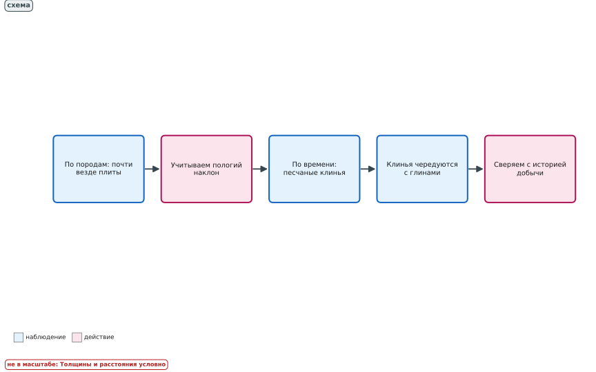

Временная корреляция выявила наклонные песчаные клинья там, где прежде видели почти сплошные пласты.
В этом примере она лучше объяснила историю добычи.
Пороговая идея. Сходные песчаники могут быть не слоями одинакового возраста, а наклонными клиньями. модель
Интерактив: как это происходит

1 / 6
Первая корреляция выглядит почти табличной.
Не в масштабе: Толщины и расстояния (условно). Допущения: Геометрия и шкалы, если есть, условные; схема не оцифрована из книги..
Как это работает
Механизм
Боковые и вертикальные смены отложений сделали коллектор неоднородным в обоих направлениях. Прежние исследования сопоставляли песчаники и глинистые породы по признакам пород. стр. 417
«River-dominated deposition resulted in significant lateral and vertical facies changes, which caused a high degree of lateral and vertical heterogeneity in the resulting reservoir»
«Past reservoir characterization studies of this delta complex had correlated sandstone and shale units on the basis of lithostratigraphic features»
Как это видно
корреляция: Сопоставление интервалов разреза. Корреляция по геологическому времени лучше согласовалась с историей добычи. Неучтённый пологий наклон песчаников приводил к ошибочной корреляции. стр. 417
«However, Tye et al. (1999) were better able to match well correlations with production history using a sequence- or time-stratigraphic correlation scheme (Fig. 9.18)»
«Prior to this sequence stratigraphic interpretation, the gently dipping nature of these reservoir sandstones was unrecognized and led to improper correlations»
схема
Корреляция по породам → Проверка по времени → Песчаные клинья.
Класс B · схема · нарисовано кодом · стр. 417–418
Практика
При корреляции по породам прерывистым выглядит только интервал IA. В корреляции по времени полого погружающиеся нижние интервалы показывают прилегание наклонных слоёв к нижележащей поверхности. Песчаные дельтовые клинья не образуют сплошных плит, а переслаиваются по падению с глинистыми отложениями залива, продельты и шельфа. стр. 418
«In the lithostratigraphic cross-section, only the interval IA is discontinuous»
«In the sequence stratigraphic cross-section, downlap patterns are evident by the gently dipping nature of the basal intervals»
«The poststudy interpretation shows the stratigraphy is not tabular, instead, sand-prone deltaic wedges interfinger downdip with bay and prodelta/shelf shales. *After Tye et al. (1999)»
Решение на данных
Как применить правило
Признаки
Корреляция по породам
Проверка по времени
↓
Правило
Временная корреляция выявила наклонные песчаные клинья там, где прежде видели почти сплошные пласты. стр. 417
↓
Вывод
В этом примере она лучше объяснила историю добычи.
Потренируйтесь
Дано: Что привело к ошибкам первоначальной корреляции? (Пример из учебного узла)
Наклон нижних интервалов важен для выбора сопоставления.
Частая ошибка модель
✗Ошибка: Если два песчаника похожи, они обязательно лежат в одной сплошной плите.
✓На самом деле: По временной корреляции видны наклонные клинья, разделяемые глинистыми отложениями. стр. 417–418
Что это значит для данных по книге
Сравнивают корреляции и проверяют, какая лучше согласуется с историей добычи.
Вход
Боковые и вертикальные смены отложений сделали коллектор неоднородным в обоих направлениях.
Выход
Песчаные дельтовые клинья не образуют сплошных плит, а переслаиваются по падению с глинистыми отложениями залива, продельты и шельфа.
Где ломается
Сходство породы не позволяет увидеть пологий наклон и разрывы само по себе.
Где здесь ручной труд специалиста
Входные данные
Боковые и вертикальные смены отложений сделали коллектор неоднородным в обоих направлениях.
Ручные шаги
Сравнивают корреляции и проверяют, какая лучше согласуется с историей добычи.
Точки суждения
Сходство породы не позволяет увидеть пологий наклон и разрывы само по себе.
Время
Глава не оценивает трудозатраты; время зависит от объёма проверки и качества исходных наблюдений.
Типичные ошибки
Если два песчаника похожи, они обязательно лежат в одной сплошной плите.
Аналогия модель
Сравнить два результата связывания записей по независимым данным, а не по тем же полям, на которых строилась связь.
Где аналогия перестаёт работать: История добычи зависит не только от геометрии песчаных тел.
Рисунки книги к этому шагу по книге
Рис. 9.18. FIGURE 9.18 Comparison of prestudy lithostratigraphic correlations (upper cross-section) and poststudy sequence stratigraphic correlations and interpretations of the Romeo interval (lower cross-section). In the lithostratigraphic cross-section, only the interval IA is discontinuous. In the sequence stratigraphic cross-section, downlap patterns are evident by the gently dipping nature of the basal intervals. The poststudy interpretation shows the stratigraphy is not tabular, instead, sand-prone deltaic wedges interfinger downdip with bay and prodelta/shelf shales. *After Tye et al. (1999). Reprinted with permission of AAPG, whose permission is required for further use.* стр. 418(не перерисован — смотрите в книге)
Новые понятия
фация (facies)
Отложения одной обстановки с характерными признаками стр. 417модель
корреляция (correlation)
Сопоставление интервалов разреза стр. 417модель
продельта (prodelta)
Подводная часть дельты вдали от берега стр. 417модель
шельф (shelf)
Мелководная часть морского бассейна стр. 417модель
падение пласта (dip)
Направление максимального наклона слоя стр. 417модель
Все утверждения шага с дословной цитатой автора и страницей книги (по PDF).
Боковые и вертикальные смены отложений сделали коллектор неоднородным в обоих направлениях. наблюдение
«River-dominated deposition resulted in significant lateral and vertical facies changes, which caused a high degree of lateral and vertical heterogeneity in the resulting reservoir»
Прежние исследования сопоставляли песчаники и глинистые породы по признакам пород. наблюдение
«Past reservoir characterization studies of this delta complex had correlated sandstone and shale units on the basis of lithostratigraphic features»
Корреляция по геологическому времени лучше согласовалась с историей добычи. наблюдение
«However, Tye et al. (1999) were better able to match well correlations with production history using a sequence- or time-stratigraphic correlation scheme (Fig. 9.18)»
Неучтённый пологий наклон песчаников приводил к ошибочной корреляции. наблюдение
«Prior to this sequence stratigraphic interpretation, the gently dipping nature of these reservoir sandstones was unrecognized and led to improper correlations»
При корреляции по породам прерывистым выглядит только интервал IA. наблюдение
«In the lithostratigraphic cross-section, only the interval IA is discontinuous»
В корреляции по времени полого погружающиеся нижние интервалы показывают прилегание наклонных слоёв к нижележащей поверхности. наблюдение
«In the sequence stratigraphic cross-section, downlap patterns are evident by the gently dipping nature of the basal intervals»
Песчаные дельтовые клинья не образуют сплошных плит, а переслаиваются по падению с глинистыми отложениями залива, продельты и шельфа. наблюдение
«The poststudy interpretation shows the stratigraphy is not tabular, instead, sand-prone deltaic wedges interfinger downdip with bay and prodelta/shelf shales. *After Tye et al. (1999)»
Исходный текст урока
Стр. 417 · 9.4.2 Reservoir Example: Prudhoe Bay Field
River-dominated deposition resulted in significant lateral and vertical facies changes, which caused a high degree of lateral and vertical heterogeneity in the resulting reservoir. Past reservoir characterization studies of this delta complex had correlated sandstone and shale units on the basis of lithostratigraphic features. However, Tye et al. (1999) were better able to match well correlations with production history using a sequence- or time-stratigraphic correlation scheme (Fig. 9.18). Prior to this sequence stratigraphic interpretation, the gently dipping nature of these reservoir sandstones was unrecognized and led to improper correlations.
Стр. 418 · 9.4.2 Reservoir Example: Prudhoe Bay Field
**FIGURE 9.18** Comparison of prestudy lithostratigraphic correlations (upper cross-section) and poststudy sequence stratigraphic correlations and interpretations of the Romeo interval (lower cross-section). In the lithostratigraphic cross-section, only the interval IA is discontinuous. In the sequence stratigraphic cross-section, downlap patterns are evident by the gently dipping nature of the basal intervals. The poststudy interpretation shows the stratigraphy is not tabular, instead, sand-prone deltaic wedges interfinger downdip with bay and prodelta/shelf shales. *After Tye et al. (1999). Reprinted with permission of AAPG, whose permission is required for further use.*